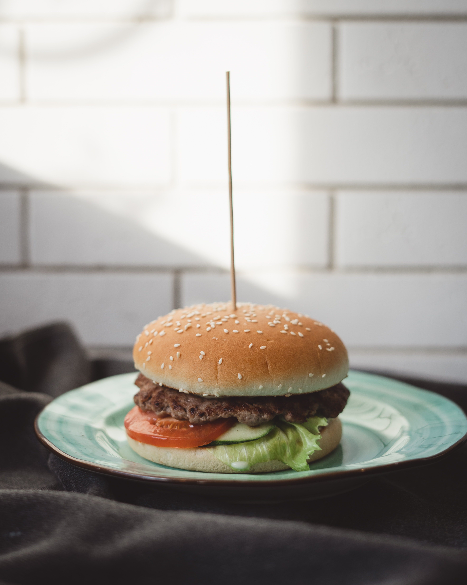

About Burger

A hamburger or burger is an American fast food. It is a type of sandwich with a patty of cooked ground meat between the two halves of a bun. Tomatoes, onions, cheese, salad and dips may also be added. The hamburger may be eaten without a knife and fork, so it is a fast food which can be eaten anywhere.
Hamburgers are named for a city in Germany called Hamburg. They were probably invented in Germany, though what we now know as a hamburger was created in the United States in the 19th century. Hamburgers appeared on menus in England and the United States in the 19th century, and became a popular food after the 1904 World's Fair.What is called a hamburger throughout the world today was different than the first German hamburgers; German dishes often involved a steak or sausage between pieces of bread instead of ground meat.
Burger fires

It's every young child's (and ours) go-to comfort food. A thick patty which is soft in the middle and crisp on the outside, a soft and crumbly bun with sesame seeds stuck to the top, some mayonnaise, chipotle, mustard atop lettuce, cucumber, roasted tomatoes and a handful of olives can make for the most memorable meal.
Veg Burger

Burgers have come a long way in India. We've proclaimed our love for them and joined the American junk food bandwagon. We've let go of the conventional Mcdonald's, Nirulas and Wimpy flavours and adopted a more creative approach, a certain flexibility that allows us to experiment. We've dared to try different bread, patties, toppings, sauces and even accompaniments.
Chilli Burger
Two burgers, each an inch thick; instead of a bun, two sugar doughnuts with the authentic stripes of the chargrill; bacon that looked and tasted like a vial of synthetic bacon-smell had been put through a 3D printer; melted cheese; a relish that must have been conceived on some kind of chilli-heat spectrum but had been deadened by more sugar.